Simple Expressions in Vertex
How 3+4*5 becomes 23
Running Vertex
23
Or read the supplied expression: ./vertex example.t
The Interpreter’s Stages
| Stage |
Input |
Output |
| Tokenizer |
Characters |
Tokens |
| Parser |
Tokens |
Expression tree |
| Evaluator |
Expression tree |
Value |
tokens = tokenize(expression)
ast = parse(tokens)
result = evaluate(ast)
Tokenizing 3+4*5
| Tag |
Value |
Column |
number |
3 |
1 |
+ |
|
2 |
number |
4 |
3 |
* |
|
4 |
number |
5 |
5 |
None |
|
6 |
Recognizing a Number
| Alternative |
Example |
\d*\.\d+ |
.5 |
\d+\.\d* |
5. |
\d+ |
123 |
The tokenizer tries patterns at the current position.
Tokens Carry Values
{"tag": "number", "line": 1, "column": 1, "value": 3}
if "." in value:
token["value"] = float(value)
else:
token["value"] = int(value)
The text "3" becomes the Python value
3.
Vertex’s Expression Grammar
expression = term { ("+" | "-") term }
term = factor { ("*" | "/") factor }
factor = <number> | "(" expression ")"
Extended Backus-Naur Form (EBNF)
Braces repeat. A vertical bar separates alternatives.
The Tree for 3+4*5

The right subtree supplies 20 to the addition.
Parsing a Factor
if token["tag"] == "number":
node = {"tag": "number", "value": token["value"]}
return node, tokens[1:]
Input: 3 + 4
Returned node: 3
Remaining tokens: + 4 and the end marker
Parentheses Re-enter the
Grammar
if token["tag"] == "(":
node, tokens = parse_expression(tokens[1:])
if tokens[0]["tag"] != ")":
raise SyntaxError(f"Expected ')', got {tokens[0]}")
return node, tokens[1:]
(3+4)*5 groups the addition first.
Building a Term
left, tokens = parse_factor(tokens)
while tokens[0]["tag"] in ["*", "/"]:
op = tokens[0]["tag"]
right, tokens = parse_factor(tokens[1:])
left = {"tag": op, "left": left, "right": right}
return left, tokens
8/4/2 builds (8/4)/2 and returns
1.0.
Requiring the Whole
Expression
ast, tokens = parse_expression(tokens)
if tokens[0]["tag"] is not None:
raise SyntaxError(f"Unexpected token: {tokens[0]}")
return ast
3 4 must fail after the parser reads 3.
Evaluating the Tree
if ast["tag"] == "number":
return ast["value"]
elif ast["tag"] == "+":
return evaluate(ast["left"]) + evaluate(ast["right"])
elif ast["tag"] == "*":
return evaluate(ast["left"]) * evaluate(ast["right"])
For 3+4*5: the children supply 3 and
20.
Where an Expression Fails
| Input |
Failure |
Stage |
3@4 |
Unrecognized character |
Tokenizer |
3+*4 |
Missing operand |
Parser |
(3+4 |
Missing closing parenthesis |
Parser |
-5 |
No unary negation rule |
Parser |
3/0 |
Division by zero |
Evaluator |
Unit Tests in Python
python3 tokenizer.py
python3 parser.py
python3 evaluator.py
Vertex has no output or assertions yet.
Python unit tests check its implementation.
Following a Wrong Result
Tokens: Did we recognize the intended values?
Tree: Did we group the operations correctly?
Evaluation: Did each node compute the right
value?
Inspect the intermediate result before changing the code.